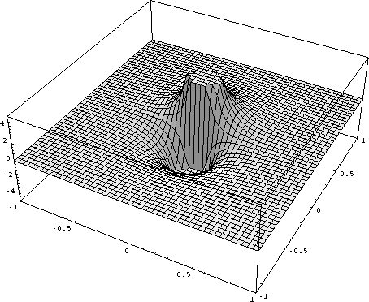

How to find the instanton solution in QCD
The field stength G^2 of an instantom looks as follows
The instanton is located at x=y=z=y=0 and has size rho=0.333 fm. For
a typical instanton configuartion in QCD, you would find the next
instanton somwhere near the corners. What's the point? The field
strength is large, on the order of |G|=14rho^(-1)=10 GeV and the
instanton liquid is dilute, instantons do not overlap significantly.
The gauge potential A_1^3 in regular gauge is
In the regular gauge, the gauge potential is long range. The long
range 1/r potential cancels in the field strength, but determines
the topological properties of the solution. We can perform a
singular gauge transformation to remove the 1/r tail

Now, the gauge potential is singular at the origin and this is
were the topology is located.